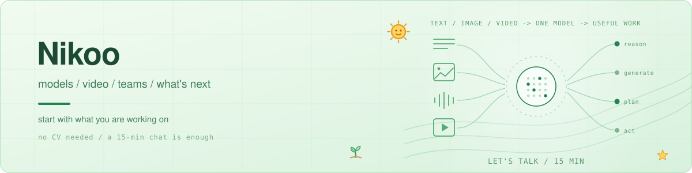

完整介绍页 → nikoyyl21.github.io 点开即读，无需登录
做大模型方向的猎头，主要看基础模型与多模态
模型怎么练 视频怎么生成 成本怎么算 效果怎么评
想聊就点开下面「简单聊 15 mins」看电话 或加微信 Hello_le_0502 15 分钟，可以先不透露姓名和现单位
方向 · 自我介绍 · 可以和谁聊 · 团队地图 · 怎么联系 · English
电话 18357766985，直接拨或者存一下都行。
一对一沟通，可以先不透露姓名和现单位，不用附简历。
做大模型方向的猎头，主要看基础模型与多模态。平时读公开的技术报告和论文，也留意团队在方向和分工上的变化。
聊的时候从你做过的具体问题开始：贡献在哪一段、还想继续解什么，不先甩岗位清单。
我是 Nikoo，长期深耕 AI 赛道，平时会持续跟进行业一线动态，同步各家团队的最新进展、组织变化与圈内真实信息。之前也陆续帮不少同学梳理过职业困惑、岗位选择、面试和谈薪相关的咨询。对我来说，不只是推荐机会，更希望做一个行业信息的交流窗口。哪怕你现阶段没有看机会的打算，也欢迎添加微信，一起聊聊技术、行业见闻，交个同赛道的朋友，后续有消息也可以互通呀
先聊你正在解的问题、负责的是哪一段，再聊下一个问题值不值得继续投入。
我会问得具体些：多大的集群、跑什么模型、同时来多少请求、多快要有结果、卡在哪。
素材怎么配、生成结果怎么控、效果怎么评，这些比岗位清单更值得先聊清楚。
不做任何决定也没关系。先匿名聊点近况，也行。
按公司归类，写到具体团队、在做的方向和办公地点，目前整理到 18 家。完整版在介绍页，可以按城市筛选。
按公开资料整理，写的是这些团队长期在做的方向和常见职位画像，不是实时招聘清单。具体岗位、层级、招几个人和办公地点，聊的时候按最新情况说；哪些是我在跟的项目，也只在一对一里讲。
榜单涨分不等于线上真有用。聊方向的时候，这句我常说。
先听你做过什么。从具体问题和你负责的那一段开始，不拿岗位清单里的关键词套人。
给能用的横向信息：同一个方向上不同团队的做法和差别，包括不那么好看的部分，我会照实说。
不合适会直说，不硬推。
| 方式 | 地址 |
|---|---|
| 电话 | 点开上方「简单聊 15 mins」查看，直接聊 15 分钟 |
| 微信 | Hello_le_0502（加的时候备注一句想聊什么就行） |
| 邮箱 | 18357766985@163.com（备选） |
一对一聊，不会共享给任何第三方；可以先不透露姓名和现单位。你的信息也不会出现在任何公开仓库或公开列表里。
点开「简单聊 15 mins」看电话，先聊 15 分钟，不用附简历
最近更新 2026-11-05 | 最近在看两件事：给回答打分的标准怎么验，以及视频生成的效果到底该怎么评。
I work as a headhunter in the foundation model space, mostly on foundation models and multimodal generation. I read public technical reports and papers, and pay attention to how teams and their focus shift. When we talk, I start with the problem you have actually worked on, not with a job list.
What I follow — four areas, each with the questions I usually ask. Text models and tuning: how training data is mixed, how a very large model is split across machines, how long an input it can read, whether the scoring standard holds up, and whether a gain survives on another task. Video and image generation: how clips and images are picked and cleaned, how a picture is built up step by step from noise, whether longer clips stay consistent, and how reference images and one-line edits are handled; speech is only mentioned in passing. Training and serving: how machines share the work, whether they sit idle, splitting "read the question" from "write the answer", reusing what has already been computed, and what a thousand words cost. Evaluation is a separate track: which score fits which task, how an offline score reaches real users, and where those scores mislead.
Teams I talk about — a public-source map of 18 first-party teams and what they work on, grouped by company and city: Alibaba Qwen / Tongyi, Tencent Hunyuan, ByteDance Seed, Zhipu GLM, Kuaishou Kling / Keye / KAT, Meituan LongCat, StepFun, Ant, Baidu, MiniMax, Xiaohongshu Dots, miHoYo anuttacon, Shopee, Ubiquant, Shanda, Bilibili, MemTensor and ModelBest. It lists long-running research directions and where those teams are based, not live openings or headcount. The filterable version is at nikoyyl21.github.io/#teams
A bit about me — I'm Nikoo. I have been working in the AI space for a long time and stay close to what is happening on the ground: how teams are progressing, how they are reorganising, and what people in the field are actually saying. Over the past year I have also helped many people think through career questions, from choosing between roles and preparing for interviews to talking about compensation. For me this is not just about recommending roles; I would rather be a place to exchange what is happening in the industry. Even if you are not looking at any opportunity right now, feel free to add me on WeChat. We can talk about the technology and what we are seeing, make a friend on the same path, and keep each other posted when something comes up.
The only ask — a 15-minute conversation. One-to-one, never shared with third parties, no need to reveal your name or current employer.
Contact — open the "15-min chat" panel above to reveal my phone number, or add WeChat Hello_le_0502. A short call is enough; no CV, no name, no current employer needed. Full profile — nikoyyl21.github.io
团队方向均来自公开资料 | 不含候选人信息与未公开岗位细节